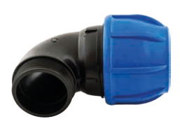

Mavi Erkek Dirsek Ürün Özellikleri
Ürün Açıklaması:
Mavi seri polietilen boru bağlantı elemanlarından olan erkek dirsekler, sulama sistemlerinde boru hattının yönünü değiştirmek ve erkek dişli bağlantılarla uyum sağlamak için kullanılır. Yüksek basınca dayanıklı yapısı ve kolay montaj özelliği ile öne çıkar.
Tarım, peyzaj ve endüstriyel uygulamalarda güvenle kullanılabilir.
Mevcut Ölçüler:
| Polietilen Boru Çapı (Ø) | Dişli Bağlantı Boyutu |
|---|---|
| 20 mm | 1/2" |
| 20 mm | 3/4" |
| 25 mm | 1/2" |
| 25 mm | 3/4" |
| 25 mm | 1" |
| 32 mm | 1/2" |
| 32 mm | 3/4" |
| 32 mm | 1" |
| 32 mm | 1 1/4" |
| 40 mm | 1" |
| 40 mm | 1 1/4" |
| 40 mm | 1 1/2" |
| 50 mm | 1 1/4" |
| 50 mm | 1 1/2" |
| 50 mm | 2" |
| 63 mm | 1 1/4" |
| 63 mm | 1 1/2" |
| 63 mm | 2" |
| 63 mm | 2 1/2" |
| 75 mm | 2" |
| 75 mm | 2 1/2" |
| 75 mm | 3" |
| 90 mm | 2 1/2" |
| 90 mm | 3" |
| 90 mm | 4" |
| 110 mm | 3" |
| 110 mm | 4" |
Kullanım Alanları: Tarımsal sulama, bahçe sulama, endüstriyel tesisatlar, basınçlı su sistemleri.